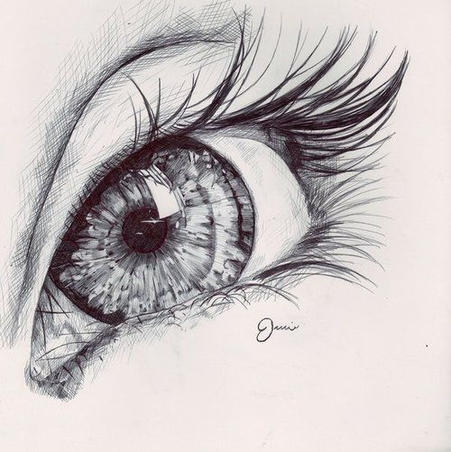

Sketch

Every Monday and Wednesday at 7:00 p.m.
A sketch is a rapidly executed freehand drawing that is not usually intended as a finished work. A sketch may serve a number of purposes: it might record something that the artist sees, it might record or develop an idea for later use or it might be used as a quick way of graphically demonstrating an image, idea or principle.